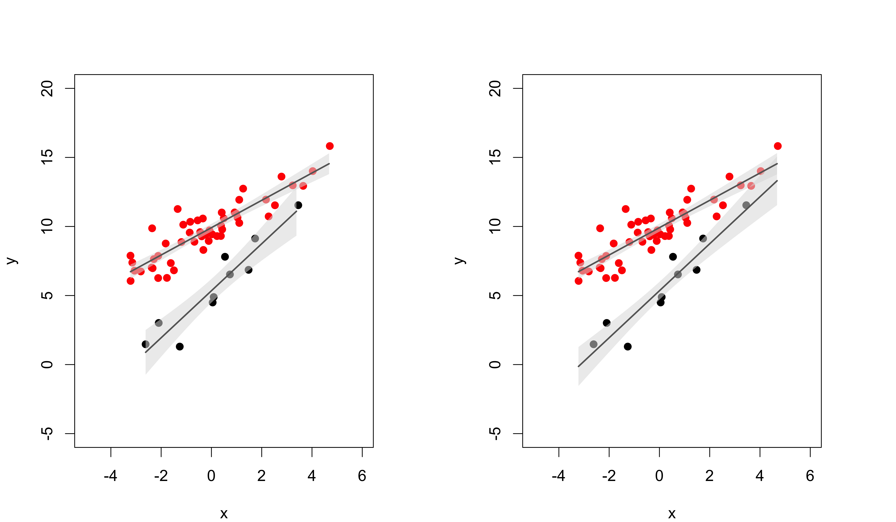
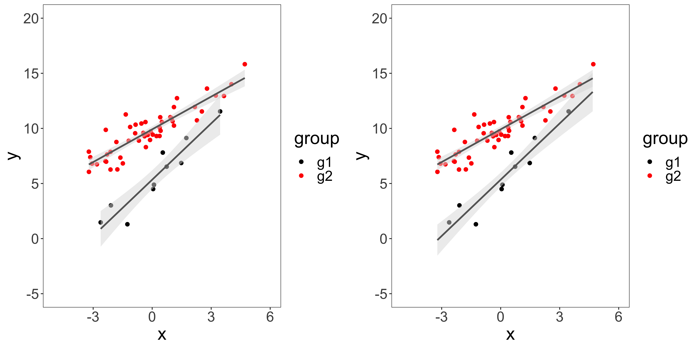

A short description of the post.
set.seed(6)
n1 <- 10
n2 <- 50
x1 <- rnorm(n1, sd=2)
y1 <- 5 + 2*x1 + rnorm(n1, sd=1)
x2 <- rnorm(n2, sd=2)
y2 <- 10 + 1*x2 + rnorm(n2, sd=1)
x <- c(x1,x2)
y <- c(y1,y2)
df <- data.frame(x = x,
y = y,
group = factor(c(rep("g1", n1),
rep("g2", n2))))
head(df)
x y group
1 0.53921196 7.806275 g1
2 -1.25997083 1.301459 g1
3 1.73731966 9.127846 g1
4 3.45439103 11.540216 g1
5 0.04837528 4.497196 g1
6 0.73605035 6.526706 g1
fit1 <- lm(y1 ~ x1)
summary(fit1)
Call:
lm(formula = y1 ~ x1)
Residuals:
Min 1Q Median 3Q Max
-1.8987 -0.8493 0.1223 0.7652 1.5437
Coefficients:
Estimate Std. Error t value Pr(>|t|)
(Intercept) 5.3448 0.3715 14.389 5.32e-07 ***
x1 1.7021 0.2116 8.044 4.20e-05 ***
---
Signif. codes: 0 '***' 0.001 '**' 0.01 '*' 0.05 '.' 0.1 ' ' 1
Residual standard error: 1.166 on 8 degrees of freedom
Multiple R-squared: 0.89, Adjusted R-squared: 0.8762
F-statistic: 64.71 on 1 and 8 DF, p-value: 4.197e-05
fit2 <- lm(y2 ~ x2)
summary(fit2)
Call:
lm(formula = y2 ~ x2)
Residuals:
Min 1Q Median 3Q Max
-1.8842 -0.6105 -0.1154 0.6376 2.6806
Coefficients:
Estimate Std. Error t value Pr(>|t|)
(Intercept) 9.91357 0.13962 71.01 <2e-16 ***
x2 0.98965 0.07134 13.87 <2e-16 ***
---
Signif. codes: 0 '***' 0.001 '**' 0.01 '*' 0.05 '.' 0.1 ' ' 1
Residual standard error: 0.9819 on 48 degrees of freedom
Multiple R-squared: 0.8003, Adjusted R-squared: 0.7962
F-statistic: 192.4 on 1 and 48 DF, p-value: < 2.2e-16
fit <- lm(y ~ group + x + group:x, data = df)
summary(fit)
Call:
lm(formula = y ~ group + x + group:x, data = df)
Residuals:
Min 1Q Median 3Q Max
-1.8987 -0.6329 -0.1012 0.6637 2.6806
Coefficients:
Estimate Std. Error t value Pr(>|t|)
(Intercept) 5.3448 0.3218 16.608 < 2e-16 ***
groupg2 4.5688 0.3524 12.964 < 2e-16 ***
x 1.7021 0.1833 9.285 6.27e-13 ***
groupg2:x -0.7125 0.1975 -3.608 0.000659 ***
---
Signif. codes: 0 '***' 0.001 '**' 0.01 '*' 0.05 '.' 0.1 ' ' 1
Residual standard error: 1.01 on 56 degrees of freedom
Multiple R-squared: 0.877, Adjusted R-squared: 0.8704
F-statistic: 133.1 on 3 and 56 DF, p-value: < 2.2e-16
pred1 <- data.frame(x1 = seq(min(x1),max(x1),0.1))
pred1 <- cbind(pred1, predict(object = fit1, newdata = pred1, interval = "confidence"))
head(pred1)
x1 fit lwr upr
1 -2.618409 0.8879563 -0.7334178 2.509330
2 -2.518409 1.0581684 -0.5218678 2.638205
3 -2.418409 1.2283806 -0.3107546 2.767516
4 -2.318409 1.3985927 -0.1001139 2.897299
5 -2.218409 1.5688049 0.1100149 3.027595
6 -2.118409 1.7390170 0.3195888 3.158445
pred2 <- data.frame(x2 = seq(min(x2), max(x2),0.1))
pred2 <- cbind(pred2, predict(object = fit2, newdata = pred2, interval = "confidence"))
head(pred2)
x2 fit lwr upr
1 -3.220099 6.726804 6.211664 7.241944
2 -3.120099 6.825769 6.322623 7.328914
3 -3.020099 6.924734 6.433457 7.416010
4 -2.920099 7.023698 6.544156 7.503241
5 -2.820099 7.122663 6.654708 7.590618
6 -2.720099 7.221628 6.765105 7.678151
pred <- data.frame(x = rep(seq(min(x),max(x),0.1), each=2), group = c("g1","g2"))
pred <- cbind(pred, predict(object = fit, newdata = pred, interval = "confidence"))
head(pred)
x group fit lwr upr
1 -3.220099 g1 -0.13619325 -1.549365 1.276979
2 -3.220099 g2 6.72680387 6.198727 7.254880
3 -3.120099 g1 0.03401889 -1.346512 1.414549
4 -3.120099 g2 6.82576869 6.309988 7.341549
5 -3.020099 g1 0.20423104 -1.143868 1.552330
6 -3.020099 g2 6.92473351 6.421120 7.428347
par(mfrow=c(1,2), mar = c(4,4,4,4), cex=1.25)
plot(y1 ~ x1, pch = 19, col = 1,
xlab = "x", ylab = "y",
xlim = c(-5,6), ylim = c(-5,20))
points(y2 ~ x2, pch = 19, col = 2)
polygon(x = c(pred1$x1, rev(pred1$x1)), y = c(pred1$lwr, rev(pred1$upr)), col = "#DDDDDD88", border = NA)
polygon(x = c(pred2$x2, rev(pred2$x2)), y = c(pred2$lwr, rev(pred2$upr)), col = "#DDDDDD88", border = NA)
lines(fit ~ x1, data = pred1, col="#666666", lwd=2)
lines(fit ~ x2, data = pred2, col="#666666", lwd=2)
plot(y ~ x, data = df,
pch = 19, col = df$group,
xlim = c(-5,6), ylim = c(-5,20))
pred_g1 <- pred[pred$group == "g1",]
pred_g2 <- pred[pred$group == "g2",]
polygon(x = c(pred_g1$x, rev(pred_g1$x)), y = c(pred_g1$lwr, rev(pred_g1$upr)), col = "#DDDDDD88", border = NA)
polygon(x = c(pred_g2$x, rev(pred_g2$x)), y = c(pred_g2$lwr, rev(pred_g2$upr)), col = "#DDDDDD88", border = NA)
lines(fit ~ x, data = pred_g1, col="#666666", lwd=2)
lines(fit ~ x, data = pred_g2, col="#666666", lwd=2)
library(ggplot2)
library(ggpubr)
gg1 <- ggplot(df, aes(x=x, y=y, group = group)) +
theme_bw() +
theme(panel.grid.major=element_blank(), panel.grid.minor=element_blank(),
text = element_text(size=22)) +
coord_cartesian(xlim = c(-5,6), ylim = c(-5,20)) +
geom_point(aes(colour = group), size = 2) +
geom_smooth(method=lm, formula = y ~ x, se = TRUE, aes(group = group),
colour='#666666' , fill='#DDDDDD', alpha = 0.5) +
scale_color_manual(values=c("black", "red"))
gg2 <- ggplot(df, aes(x=x, y=y, fill = group)) +
theme_bw() +
theme(panel.grid.major=element_blank(), panel.grid.minor=element_blank(),
text = element_text(size=22)) +
coord_cartesian(xlim = c(-5,6), ylim = c(-5,20)) +
geom_point(aes(colour = group), size = 2) +
geom_ribbon(data = pred, aes(x=x, y=fit,ymin = lwr, ymax = upr, group = group),
fill='#DDDDDD', alpha = 0.5) +
geom_line(data = pred, aes(y = fit), size = 1, colour="#666666") +
scale_color_manual(values=c("black", "red"))
ggarrange(gg1, gg2,
ncol = 2, nrow = 1)
geom_smooth() is not the best choice because it fits 2 independent linespredict() using geom_ribbon()If you see mistakes or want to suggest changes, please create an issue on the source repository.
For attribution, please cite this work as
Schauer (2020, Sept. 17). CompBioMethods: Confidence Intervals in linear regression. Retrieved from https://tschauer.github.io/blog/posts/2020-09-17-confidence-intervals-in-linear-regression/
BibTeX citation
@misc{schauer2020confidence,
author = {Schauer, Tamas},
title = {CompBioMethods: Confidence Intervals in linear regression},
url = {https://tschauer.github.io/blog/posts/2020-09-17-confidence-intervals-in-linear-regression/},
year = {2020}
}